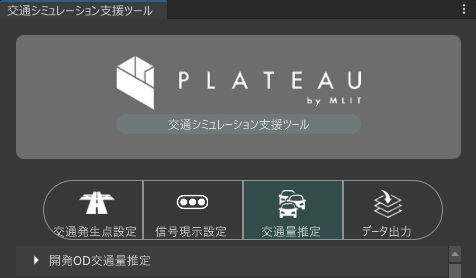
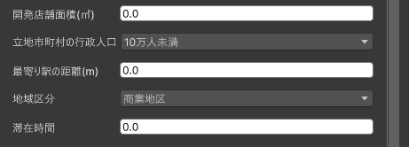

開発交通量推定
本機能は、開発エリアおよび開発条件を指定し、開発エリアに係る発生集中量を推定し、開発OD交通量ファイルを出力する機能です。

事前準備
既存OD交通量推定機能で出力したデータが存在すること。
開発エリアのゾーン情報を用意しておくこと。
利用手順
開発エリアの設定
開発エリアを指定します。
開発ゾーンの指定
開発ゾーン指定をクリックし、シーンビュー上で開発ゾーンとするゾーンをクリックします。

参照ゾーン
参照ゾーン指定をクリックし、シーンビュー上で開発ゾーンが所属するゾーンをクリックします。

既存OD交通量参照フォルダ
読み込みをクリックし、既存OD交通量推定機能で出力した既存OD交通量ファイルが格納されたフォルダを指定します。指定したフォルダが開発OD交通量の出力先にもなります。
開発条件の設定
開発エリアの条件を指定します。
- 開発店舗面積
- 立地市町村の行政人口
- 最寄り駅の距離
- 地域区分
滞在時間

時間帯別交通量設定
時間帯別の交通量は、簡易設定と詳細設定の2通りの方法で指定できます。
簡易
時間ごとの交通量の比率をガウス分布により設定できます。
- ピーク時間
- 標準偏差
- ピーク率
詳細
時間ごとの交通量の比率をスライダーで時間ごとに細かく設定できます。
スライドバーを操作または数値を入力します。

実行
実行 をクリックすると、設定したシミュレーション条件に基づいて推定が行われ、開発OD交通量データが出力されます。